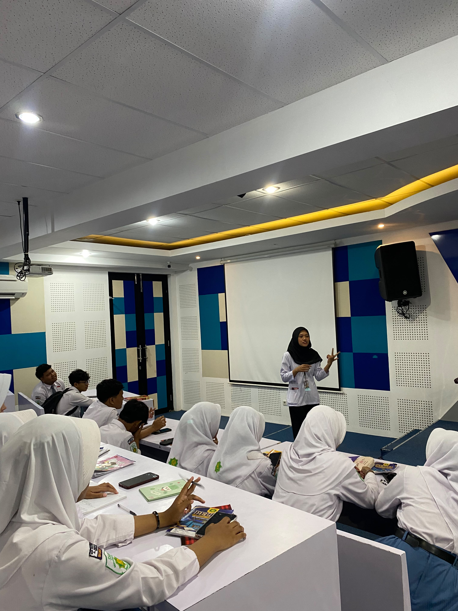
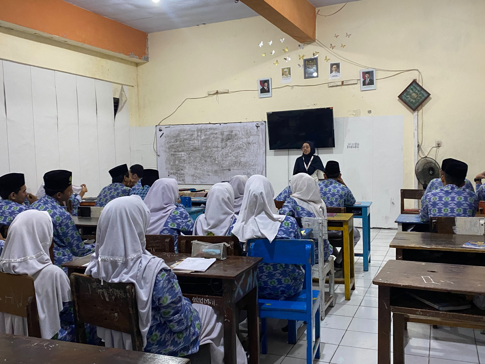
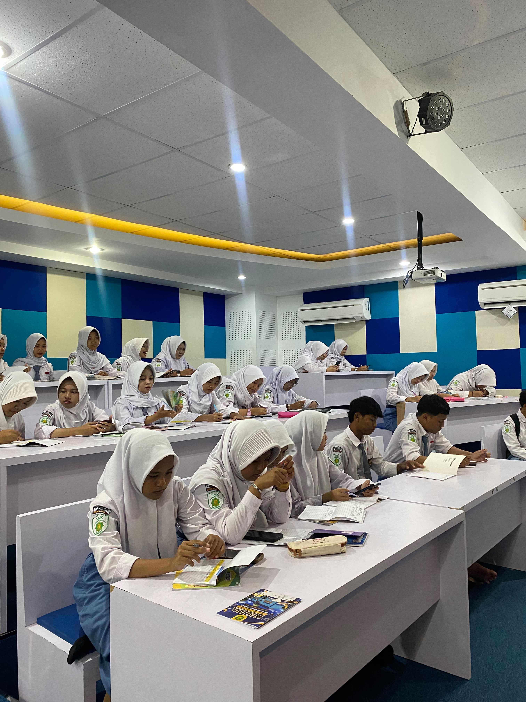

MENGAJAR / 01Oktober 2026
Kelas yang bergerak bersama
Ketika mahasiswa, guru, dan siswa belajar sebagai satu komunitas, ruang kelas menjadi tempat untuk mencoba, merefleksikan, dan memperbaiki bersama.
Buka cerita →arsip praktik lapangan pendidikan
UNNES Lantip 8 adalah ruang belajar bagi 22 mahasiswa untuk berkontribusi nyata bersama guru dan siswa di SMK Muhammadiyah 1 Semarang melalui pembelajaran kreatif, inovatif, dan menyenangkan.

01 / tentang lantip 8
Kami datang bukan sekadar untuk menyelesaikan praktik. Kami datang untuk mendengar, mengamati, mencoba, lalu pulang dengan pertanyaan baru.
Baca cerita lengkap ↗
MENGAJAR / 01Oktober 2026
Ketika mahasiswa, guru, dan siswa belajar sebagai satu komunitas, ruang kelas menjadi tempat untuk mencoba, merefleksikan, dan memperbaiki bersama.
Buka cerita →Observasi / 10–17 Sep 2026
Sekolah / 12–23 Okt 2026
“Mengajar adalah cara paling jujur untuk terus belajar.”
UNNES LANTIP 8 / 2026
Program UNNES Lantip mempertemukan 22 mahasiswa dengan pengalaman nyata mengajar, mendampingi, dan berkolaborasi bersama SMK Muhammadiyah 1 Semarang.
Ini adalah kesempatan untuk menerapkan pengetahuan kampus, membantu sekolah, mengembangkan inovasi pembelajaran, dan menghadirkan dampak nyata bagi siswa.
Tujuan utama
Mengembangkan mahasiswa yang literate, agile, nurturing, trailblazing, innovative, dan mampu melakukan problem solving melalui kerja kolaboratif di sekolah.
Memahami konteks siswa, guru, dan budaya sekolah sebelum mengambil langkah.
Menghadirkan metode belajar yang aktif, kontekstual, dan terasa dekat.
Menyimpan pelajaran dari setiap sesi untuk menjadi pendidik yang lebih baik.
Kampus asal
Ruang tumbuh untuk calon pendidik lintas program studi dengan semangat Kampus Berdampak.
01Sekolah mitra
Mitra pelaksanaan program LANTIP 8 untuk praktik pembelajaran, literasi digital, dan inovasi pendidikan.
02Periode pelaksanaan
10 September — 9 November03 / nilai capaian LANTIP
Menguasai bidang ilmu dan mampu beradaptasi dengan perubahan pendidikan.
Memberi dampak positif serta menggerakkan tim melalui kepemimpinan dan inisiasi.
Menemukan ide atau metode baru untuk memecahkan persoalan pembelajaran.
Mengimplementasikan gagasan dan solusi melalui kerja kolaboratif di sekolah.
orang-orang di balik proses
Dua puluh dua mahasiswa UNNES belajar menjadi satu tim untuk mendukung pembelajaran, administrasi, literasi digital, dan inovasi di sekolah mitra.
Pendamping perjalanan
Pembimbingan dilakukan bersama dosen pembimbing, koordinator dosen pembimbing, dan guru pamong sesuai penugasan program UNNES Lantip.
Dosen pembimbing lapangan
Mendampingi perencanaan, pelaksanaan, monitoring, evaluasi, dan laporan mahasiswa.
Guru pamong
Memberikan arahan pembelajaran, pendampingan praktik, dan penilaian di sekolah mitra.
Merancang pengalaman belajar yang membuat siswa merasa dilihat, dilibatkan, dan dipercaya.
→catatan praktik / ruang kelas
Setiap pertemuan adalah prototipe kecil: dirancang, dijalankan, didengarkan, lalu diperbaiki bersama.
01 / logbook pembelajaran
Kami tidak mencari kelas yang sempurna. Kami mencari kelas yang mau terus bergerak.
Mendokumentasikan profil, struktur, tata tertib, fasilitas, administrasi, dan praktik positif di sekolah.
Mengembangkan RPP, media, LKS, bahan ajar, dan instrumen penilaian sesuai kebutuhan pembelajaran.
Melaksanakan pembelajaran terbimbing minimal dua kali dengan bimbingan guru pamong dan dosen pembimbing.
Melaksanakan pembelajaran mandiri, evaluasi, tindak lanjut, dan menyusun laporan akhir individu.

METODE / 0402 / cara kami bergerak
Di dalam kelas, tidak ada formula yang benar-benar final. Kami belajar membaca energi, mengubah tempo, dan memberi ruang agar siswa mengambil kepemilikan.
Lihat perangkat ajar ↗arsip visual / SMK Muhammadiyah 1 Semarang
Potongan perjalanan 22 mahasiswa UNNES Lantip 8 bersama guru dan siswa di sekolah mitra. Klik satu frame untuk melihat lebih dekat.
ruang berbagi / perangkat pembelajaran
Modul ajar Lantip 8 tersedia melalui Google Drive. Gunakan QR code di bawah ini untuk mengakses dan membaca modul ajar.
01 / akses modul ajar
Gunakan kamera ponsel atau aplikasi pemindai QR untuk membuka Google Drive yang berisi Modul Ajar Ekosistem di Sekitar Kita.
MODUL AJAR / L8 2026
Biologi · Kelas X · akses melalui QR code
02 / catatan publikasi
Perangkat pembelajaran dibagikan melalui Google Drive agar dapat diakses, digunakan, dan dikembangkan kembali oleh pendidik lain.
Lihat lebih dekat potongan perjalanan Lantip 8 yang kami simpan untuk diingat dan diceritakan kembali.